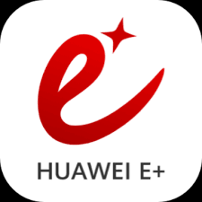
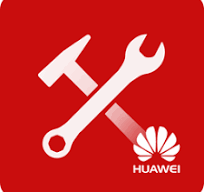

<html>
<title>Huawei Tanıtım</title>
<link rel="stylesheet" type="text/css" href="../haberler.css">
<meta charset="UTF-8">
</html>


<body>


<div class="navigasyon_bar">

	<a href="../haberler.html"> <div class="ic_div">  </div> </a>
	

	<a href="../../huawei_hakkında/huawei_hakkinda.html"> <div class="ic_div"> Huawei Hakkında </div> </a>
	<a href="../../urunler/urunler.html"> <div class="ic_div"> Ürünler </div> </a>

	<a href="../../sürdürülebilirlik/sürdürülebilirlik.html"> <div class="ic_div"> Sürdürülebilirlik </div> </a>

	<a href="../../eğitim/egitim.html"> <div class="ic_div"> Eğitim </div> </a>
	<a href="../../haberler/haberler.html"> <div class="ic_div"> Haberler </div> </a>

</div>

<!------------------------------------------------------------>

<div class="haber_sayfasi">
<h1 class="baslik">
Huawei, Orta Doğu ve Orta Asya için Geliştirilmiş Yapay Zeka Veri Gölü Çözümünü Piyasaya Sürerek Akıllı Endüstri Dönüşümünü Güçlendiriyor.</h1>

<p class="metin">
<br><br><br>

[Dubai, BAE, 15 Ekim 2025] GITEX GLOBAL 2025 sırasında Huawei, Dubai'de Yenilikçi Veri Depolama Zirvesi'ni başarıyla gerçekleştirdi. Zirve, Orta Doğu ve Orta Asya'nın çeşitli ülkelerinden müşterileri ve ortakları bir araya getirerek yapay zeka çağında veri altyapısı geliştirme trendleri ve en iyi uygulamaları hakkında görüş alışverişinde bulunulmasını sağladı. Etkinlikte Huawei, Orta Doğu ve Orta Asya bölgesi için geliştirilmiş Yapay Zeka Veri Gölü Çözümünü tanıttı.
<br><br>

Huawei Kurumsal Veri Depolama Pazarlama ve Çözüm Satış Departmanı Başkanı Fu Xiao, bir konuşma yaparak bu geliştirilmiş çözümün birkaç önemli yeniliğini tanıttı:
<br><br>


• OceanStor A600, yapay zeka çıkarım senaryoları için özel olarak tasarlanmış, “uzun bellekli çıkarım” yeteneklerine sahip bir depolama sistemidir. Büyük ölçekli model eğitimini ve çok turlu çıkarımı verimli bir şekilde destekleyerek, tıbbi görüntüleme, endüstriyel kalite kontrolü ve akıllı eğitim gibi uygulamalarda olağanüstü performans sunar ve gerçek anlamda “güçlü, hızlı ve verimli çıkarım” sağlar.<br><br>

• OceanStor Pacific 9926, büyük veri senaryoları için tasarlanmış, tamamen flaş bellek tabanlı dağıtılmış bir depolama sistemidir ve aynı kapasitede önemli ölçüde iyileştirilmiş performans ve enerji verimliliğiyle HDD'nin 1:1 yerine geçebilecek bir çözüm sunar.
<br><br>

• Huawei OceanCyber ​​Veri Güvenliği Çözümü, birleşik tespit, işbirlikçi savunma ve kurtarma tatbikatları olmak üzere üç temel mekanizmaya dayalı, tam yaşam döngüsü veri koruma platformu oluşturmaktadır.<br><br>


• DME (Omni-Dataverse), veri kataloglama, veri soy ağacı ve akıllı katmanlama gibi teknolojilerden yararlanarak eksabayt ölçeğindeki verileri görselleştirmeyi, yönetmeyi ve dinamik olarak harekete geçirmeyi sağlayan birleşik veri alanıdır.<br><br>

Huawei, geliştirilmiş Yapay Zeka Veri Gölü Çözümü ile, veri hızlandırma, dayanıklılık ve akıllı yönetim özelliklerine sahip güçlü bir akıllı veri altyapısı oluşturmayı ve yapay zeka çağında tüm sektörlerde dijital ve akıllı dönüşümü güçlendirmeyi hedefliyor.<br><br>


Roland Berger Dijital Sektör Müdürü Hugo Carreira, yapay zekânın ve temel modellerin hızlı büyümesini vurgulayan bir açılış konuşması yaptı.
<br><br><br>

Endüstriler genelinde yapay zekanın katlanarak artan kullanımının, veri altyapısını yapay zekanın sanayileşmesi için kilit bir itici güç haline getirdiğini vurguladı. Veri depolama, yapay zeka performansı ve maliyet verimliliğinde kritik bir rol oynuyor. Veri kümelerinin patlayıcı büyümesi, yüksek verimliliğe sahip GPU/TPU sistemlerine yönelik açık bir talep yaratırken, düşük gecikme süresi çıkarım iş yükleri için hayati önem taşıyor.
 <br><br><br>

Yapay zekâ çağında veri altyapısının evriminde uzmanlaşmış yapay zekâ depolama ve esnek depolama mimarilerinin kaçınılmaz trendler olduğu sonucuna vardı.
 <br><br><br>


Huawei, yapay zekanın endüstriyel olarak benimsenmesini hızlandıran, yapay zekaya hazır veri altyapısı sağlamak için tüm sektörle el ele çalışarak teknolojik yeniliğe olan bağlılığını sürdürmektedir.
 <br><br><br>


</p>

</div>


<footer class="alt-banner">
  <h1 class="footer_baslik">HUAWEI</h1>


<div class="ustbar">

	<a href="../../index.html" > 
	</img>
	</a>

		<a href="https://www.facebook.com/HuaweiEnterprise" > 
	</img>
	</a>
<a href="https://www.linkedin.com/company/huawei-enterprise" > 
	</img>
	</a>
<a href="https://x.com/HUAWEient" > 
	</img>
	</a>
<a href="https://www.instagram.com/huaweient/" > 
	</img>
	</a>
<a href="https://www.youtube.com/user/HuaweiEnterprise" > 
	</img>
	</a>
	

</div>


  <div class="foot_divs">
    <a href="https://app.huawei.com/eplus/front/index.html#/download">
      <div class="foot_div1">
        
        Huawei e+ Uygulaması
      </div>
    </a>

    <a href="https://app.huawei.com/eplus/soho/front/index.html#/download">
      <div class="foot_div1">
        
        Huawei eKit Uygulaması
      </div>
    </a>

    <a href="https://m.support.huawei.com/intl/prod/enterprisemobile/brochure/index_en.html">
      <div class="foot_div1">
        
        Huawei HiKnow Uygulaması
      </div>
    </a>

    <a href="https://app.huawei.com/eplus/smb/front/index.html#/download?countryCode=Global">
      <div class="foot_div1">
        
        Huawei eFly Uygulaması
      </div>
    </a>
  </div>

  <div class="foot">
    <a href="https://www.huawei.com/en/contact-us">Bize Ulaşın</a>
    <a href="https://www.huawei.com/en/legal">Kullanım Şartları</a>
    <a href="https://www.huawei.com/en/privacy-policy">Gizlilik Politikası</a>
    <a href="https://www.huaweicloud.com/intl/en-us/">Huawei Bulut</a>
  </div>

  <p class="last_foot">© 2026 Tüm hakları saklıdır</p>
</footer>


</div>

</body>
